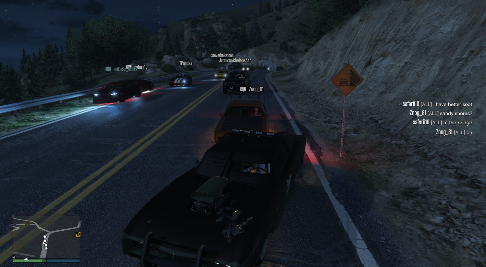
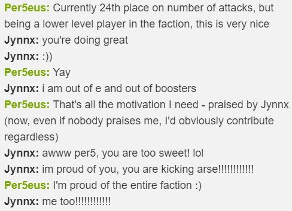
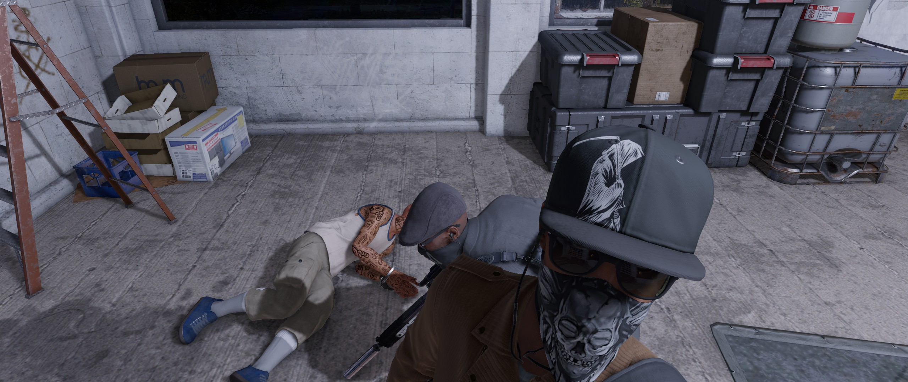
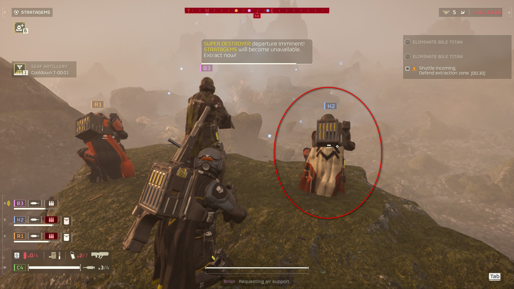
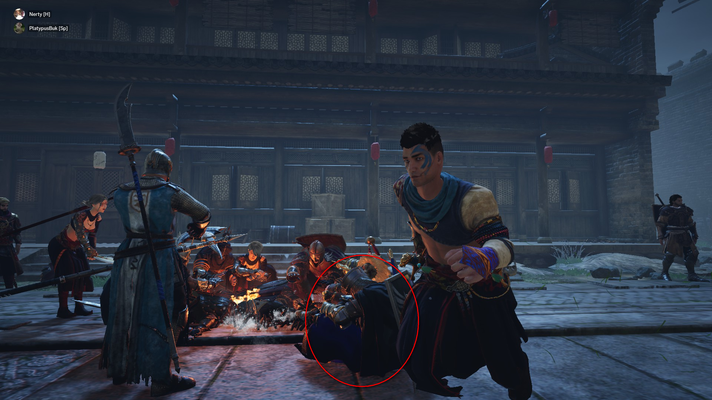
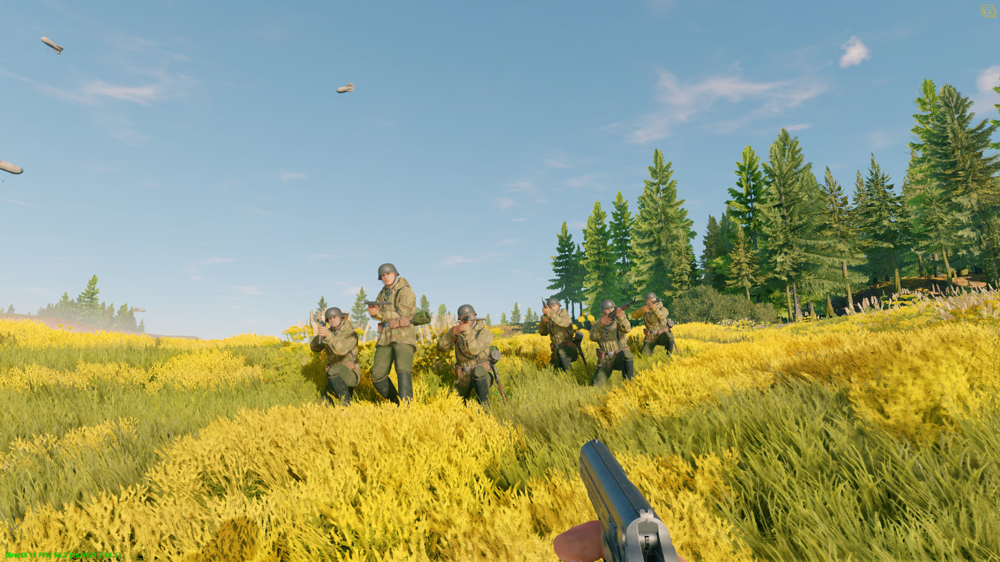
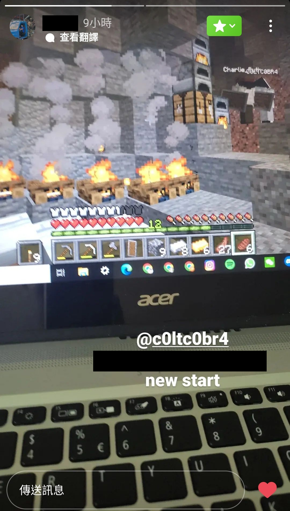

Personal Website of Lok Tin Wong
Video Games
I have played my fair share of video games over the past ten years. My parents used to impose very strict gaming quotas, limiting me to only 25 minutes a week. Along with this came the restriction of YouTube; I could only watch 10 minutes a week of YouTube at the time. Hence, I have no recollection of the memes that were prevalent then, and my friends now are shocked that I do not know them. Back to the topic of video games, my gaming limitation has grown more lenient over time, until I am finally trusted to control my own gaming time.
What are video games to me? An escape? A life I cannot live in reality? Just simple entertainment? It depends on the genre.
Story-driven single-player games are basically books that I read or movies that I watch. It is role-playing a character in a well-crafted story. In my opinion, they are not for high intensity excitement but to provide an experience akin to reading an excellent novel, or to those who cannot visualize images from words, watching a movie.
Simulator/strategy games give me a different perspective on the world we live in. How does city planning work? What resources does a medieval colony need to survive? How do kings manage their vassals, deal with potential rivals, and maintain a family's heritance? All can be explored in simulator games, and it is through answering these questions that gives me satisfaction.
Here is a comprehensive list of the video games that I have played. I especially recommend the ones preceded by 👍, if you find your taste similar to mine.
Single-player with Story
- Grand Theft Auto V
- Watch Dogs 2
- Watch Dogs: Legion
- The Witcher 3: Wild Hunt
- Red Dead Redemption 2
- Tom Clancy's Ghost Recon Wildlands
- Sniper Elite 5
- Assassin's Creed Unity
- HITMAN World of Assassination
- Bully Scholarship Edition
Sandbox/Simulator/Strategy
- Minecraft
- Once Human
- Crusader Kings 2
- Unciv (unofficial remake of Civilization V)
- Total War: Warhammer III
- The Sims 4
- Cooking Simulator
- City Skylines
- Going Medieval
Driving/Racing
- Forza Horizon
- Test Drive Unlimited 2
- Need for Speed: Most Wanted (2012)
- City Car Driving
Player versus Player
- Conqueror's Blade
- Apex Legends
- PUBG: Battlegrounds
- War Thunder
- Enlisted
Others
- Torn
- Helldivers 2
- SCP - Containment Breach
Here are games that I have never played, but greatly interests me.
- For Honor
- Titanfall 2
- Cyberpunk 2077
- Ready Or Not
- Warhammer 40,000: Space Marine 2
- Chivalry 2
I would not describe myself as a hardcore gamer. I have no interest in spending countless hours to make it to the top of a leaderboard, or to prove that I am better than anyone in a game. Instead, I value the unforgettable moments of playing with my friends, especially those that I have known for years and are now separated across continents.
Playtime Leaderboard
Last updated: 2026-03-07
All of the playtimes below are very rough estimates, considering that AFK durations should not be included and some games do not track playtime.
- Grand Theft Auto V—800+ hours
- Minecraft—No idea how many hours, but estimated to be more than the 3rd place.
- Total War: Warhammer III—380 hours
- Conqueror's Blade—130 hours
- Once Human—110 hours
- Helldivers 2—85 hours
- Watch Dogs: Legion—80 hours
- Watch Dogs 2—Not idea how many hours but is the only game that I have finished 3 times.
Gaming Gallery







Note: I covered their Instagram usernames to protect their privacy, since their accounts are private.
Opinion on PVP Games
PVP stands for player-versus-player. I define a PVP game as any game that involves competition between players. This is certainly not limited to first-person shooters like Counter-Strike: Global Offensive or Tom Clancy's Rainbow Six Siege; racing games also count, if players can race against each other.
Let me get this out of the way. When I play a video game, I expect enjoyment in every spent moment. I do not want to "grind" for hours before a game actually becomes fun.
Now, let us discuss the nature of PVP games. Most PVP games take quite some practice before one is proficient at it. Before achieving proficiency, one is expected to lose frequently, and inevitably, receive less enjoyment than someone who is more skilled. Say, if a game requires 100 hours of playtime before one can be considered "proficient", then the initial 100 hours would be suffering. Some games claim to have skill-based matchmaking, but I really doubt the effectiveness of their matchmaking algorithm. Which statistic(s) best represents a player's skill? Is skill even quantifiable? Anyway, my point is, if I have to practice playing a game a fair bit before I can truly enjoy it, then I am not playing it. Video games are not the same as sports. One may gain health benefits playing a sport, even if they are a novice. I cannot say the same about video games. I do not think there any inherent benefits in gaming, aside from having fun. If I am not having fun, I am not playing.
Another problem with PVP games is the pressure to maintain one's skill. Consistency is important. If one takes a break from playing a competitive game, they may find their skills "rusty" upon returning, along with significantly decreased enjoyment. The way I see it, there are only two options *, since casually playing a competitive game will only lead to many losses, heavy blows to self-esteem, and deteriorating sanity. Option 1, either one completely stays away from PVP games, or Option 2, one spends considerable time playing a PVP game consistently. Despite my love for video games, I am unwilling to let them take up the majority of my day, so I choose the Option 1. Single-player games are all I need, for I can quit anytime I want, and return anytime I want.
I have once played 30 hours of Apex Legends. I did not enjoy any moment of those 30 hours. It was the false hope of "it's going to get better" that kept me from quitting any earlier, but I have learned my lesson now.
In very simple terms, a PVP game is a competition of which player is willing to spent the most time of their life playing said game. When I think of the matter this way, the mere thought of getting into a PVP game makes me reel in disgust. You can argue that single-player games are also a waste of time, but I can withdraw from them whenever I wish. Can you take a six-month break from Apex Legends, return to it and still be as skilled as you were before? I think not. Can I take a six-month break from The Witcher 3: Wild Hunt, return to my playthrough and still have fun? Hell yeah.
*Under normal circumstances, I am not one to deal with absolutes, for I am no Sith, but this is a different case.
Opinion on Pay-To-Win and Microtransactions
Pay-To-Win
Pay-To-Win, which we will call P2W for short, is when players can spend real money to gain advantages over others. Said advantages include superior equipment, more or better rewards* after completing tasks**, or being able to perform actions that others cannot (Call of War is an example). Even if these advantages are small, I would still regard it as P2W. Any kind of performance boost attained through spending real money is P2W. This is not to say that P2W games do not require skill, but if spending real money gives a player advantages over opponents who do not spend, that undermines the importance of skill.
I should acknowledge that I speak from a player's perspective, and not from a business-making perspective. Regardless of who I am, however, I would still argue that a good/ethical game should strive towards finding a win-win situation for both players and business owners. I would then argue that P2W games favour the business owner more than the enjoyment of players.
For example, War Thunder is a P2W game. One can purchase vehicles that range between 30 USD to 70 USD that clearly outperform standard vehicles. Some premium vehicles can be directly bought using an in-game currency, Golden Eagles (GE). However, GE is what one would call a premium currency, meaning that its main source comes from being bought with real money, and not through completing in-game tasks**. Though it may be possible to earn enough GE to buy a premium vehicle without spending real money, the time required is gargantuan, to a point that it feels more like a grind than actually satisfying gaming sessions. Unfortunately, I have to admit that it is incredibly subjective on exactly how much time is considered gargantuan. My rebuttal to this counterargument is that a game cannot be considered fair if spending money decreases the time it takes to finish an in-game task, regardless of how large that time difference is.
It is also worth noting that War Thunder is free to download. Perhaps being P2W is very profitable for the developers, but let us first look at a different game.
Apex Legends is also free to download, yet not P2W. Any microtransactions (we will get into this topic later) in the game are purely cosmetics and have no effect on one's performance. I have heard that one can spend some kind of premium currency to purchase new characters, but I am not sure if this constitutes a "performance boost". A new character may have new abilities, but that does not necessarily mean that they are better than the characters that one starts with, for free. Contrary to War Thunder, Apex Legends can make money just from selling cosmetics that do not impact performance, unlike the premium vehicles in War Thunder.
Here is my take on P2W games. Personally, I would never play them. A battle of "whose wallet is thicker" is pointless and not something I would take part in. Even if it is possible to compete without spending, the additional effort one needs to put in is not worth my time. I do not enjoy Player Versus Player (PVP) games to begin with, but if I have to play one, I would still most definitely prefer skill-based rather than P2W. If a game has never been advertised for providing skill-based PVP, then there is nothing wrong if it turns out to be P2W. On the other hand, if a game claims to be skill-based but is in fact P2W, then the developer of said game is blatantly lying.
*Rewards that allow a player to perform better than others, for example, better equipment, in-game currency that can be used to purchase better equipment, greater experience gains to hasten leveling up, etc.
**Tasks, missions, quests, objective, operation, contract, job. Whatever the game calls it, but you get the idea.
Microtransactions
Microtransactions are purchases that players can make after purchasing the base game. I think they are called micro to give the impression that they are very affordable. Microtransactions can give performance boosts (P2W), unlock certain content (not P2W), or purchased for cosmetic purposes (also not P2W). Hence, all P2W games have microtransactions, but not all microtransactions exist only in P2W games.
Here is my take on (non-P2W) microtransactions. In the end, you decide whether or not to purchase them. I do not see a point in complaining that cosmetics are too expensive, since cosmetics are not necessary to win. If not being able to afford cosmetics is a deal-breaker for you, then stop playing the game. It sends more of a message to the developers than whining on the internet. That is, if the developers do not already make enough money from those that are willing to spend. On a side note, if you care this much about cosmetics, go play a dress-up game.
I fail to understand why people moan and groan so much about the pricing. If the microtransaction is more than you are willing to spend, do not make the purchase. If the microtransaction is affordable and you want to look flashy, or you want to support a free-to-play game, go for it. It does seem ridiculous if a single microtransaction costs 50% or more of the base game***, but in the end, no one is forcing you to make that purchase. Remember that this is highly subjective. Just because you find microtransactions too expensive does not imply that everyone feels the same. I find that some internet users conclude that a game is bad because something dissatisifies them, without looking for any kind of general consensus among the community. Or, their idea of a general consensus is merely an agreement between them and their friends.
Total War: Warhammer III does an excellent job with their microtransactions. Now, subjectively speaking (as the majority of this "blog" is also subjective), to purchase all the downloadable content (DLC) of this game is quite expensive. For context, DLCs in this game unlock new factions that one can play as, whether that be Elves, Dwarves, or Greenskins. Even though these factions are locked behind DLCs, players can still fight against them (in the form of computer opponents) and get a feel of how they perform before buying their associated DLCs. I might not have the DLC for Dwarves, but I can play as Grand Cathay and attack them, observing their units and see if I want to play as them. This allows one to better gauge if the DLCs are worth buying. Giving players an opportunity to experience the product beforehand makes Total War: Warhammer III really special.
There has been some recent controversy about Total War: Warhammer III for not fixing the computer behaviour of certain factions, but that is a story for another day.
The Sims 4 is an interesting case. The base game is free, but DLCs range between 7 CAD to 55 CAD each. More specifically:
- Expansion Packs each cost 54.99 CAD
- Game Packs each cost 29.99 CAD
- Stuff Packs each cost 14.99 CAD
- Kits each cost 6.99 CAD
These are not microtransactions, but more like "megatransactions". If the packs are expensive because the base game is free, I can somewhat understand. Comparing The Sims 4 with the pricing of other games that I have played, I would say that the base game plus one Expansion or Game Pack is worth somewhere between 20 CAD to 30 CAD. However, for an Expansion Pack alone to cost 54.99 CAD is unacceptable for me, even after considering that the base game is free. One pack do not contain nearly enough content to be worth more than Helldivers 2. I think purchasing one pack along with the base game is worth it, but the more additional packs one buys, the less worth it is. And since I am not a hypocrite, I am not complaining to get EA to lower the prices. I just refuse to buy the packs.
***As the name suggests, microtransactions should be micro, hence a microtransaction that costs 50% or more of the base game sounds out of place. Also think about this. Say, a base game costs 50 CAD, and one of its microtransactions costs 30 CAD. If 50 CAD can buy you a game, 30 CAD should buy you more than half that game, yet microtransactions often add much less content than half of the base game. Seems not worth the money (not applicable if the base game is free). In the case that the microtransaction costs more than the base game, should it not contain more content than the base game? If it offers more than the base game, should it be a standalone game? I think there are problems with these "megatransactions".
Final Thoughts
- I do not like P2W games and would never play them for the rest of my life.
- P2W games should be made clear that they are P2W. P2W is unacceptable in a game that claims to be skill-based.
- Non-P2W microtransactions are optional, hence I do not understand the reason to complain that they are too expensive.
- I would make microtransactions to support a worthy game developer.
Opinion on Vanilla Minecraft
I have some critique of Vanilla Minecraft that I would like to share. First of all, Vanilla of any game means playing without any add-ons or modifications, so Vanilla Minecraft means playing Minecraft without any mods. Specifically, I will be critiquing Minecraft Java Edition survival mode without any mods.
Throughout the rest of this blog, you might find yourself arguing that Notch or Mojang has intended for the game to be played a specific way, so who am I to judge? My counter to this is the infamous "two-week phase". Ever considered why many players get bored of a Minecraft world after two real-life weeks? Or why some came up with the idea of a "forever world" to stop themselves from creating new worlds for a fresh experience? I think I have the answers, hence, this blog.
Combat
I personally have not played Bedrock Edition much, so I do not exactly understand the difficulty in Bedrock.
Most of the hostile mobs are not challenging to fight. Under no circumstance are they able to outsmart the player, as their behaviour is predictable and quickly becomes repetitive. For example, zombies seem to have a shorter attack range than that of players (around 1 block versus 3 blocks). Meaning, it is normally impossible for an undead to hurt a player before a player hurts it first. Even a horde of zombies often fail to fall a player, for they move much slower than a sprinting player.
- Zombies: Too slow, too little damage, attack range too short.
- Skeletons: Arrows can be dodged, shooting intervals are always the same, thus predictable.
- Spiders: Too little health, attack patterns are still too predictable.
- Creepers: Hit or miss. Either they drop on you and explode, meaning that you had no chance to survive anyway, or your shield blocks all of their damage.
- Endermen: Never teleports in front of you when provoked, for some reason. You can just about outrun them.
- Ender Dragon: The only real threat is being launched high up into the air and dying to fall damage. Clutching with an ender pearl, given that you have at least 2.5 hearts, has a 100% success rate. Hence, not much of a challenge.
On the other side of the coin, there are hostile mobs that are too difficult to defeat and not enjoyable to fight. Vexes have a small hitbox, and annoyingly, you can only damage a target in melee if your crosshair precisely fits within its hitbox, hence vexes and other hostile mobs with small hitboxes are incredibly painstaking to hit. Vexes are also able to pass through blocks and deal three times the damage of a zombie in normal difficulty. To make matters worse, they spawn as a trio or as additional reinforcements if previous vexes are still alive. One is already overwhelming. Three is impossible. Upon defeating one, no useful drops are granted to the player; only five measly experience points.
To conclude, mob combat is mostly not challenging in Vanilla. In rare cases, it is overly difficult yet still not rewarding.
I would like to add that vexes are not common hostile mobs that one faces, so their difficulty does not impact the overall combat difficulty in survival mode. Same with the addition of the warden. Most of the time, you do not see a warden. So what if the warden is challenging? Mob combat is still mostly dull.
Solution? Strengthen the most common hostile mobs, meaning zombies, skeletons, spiders, and more. Hostile mobs may attempt to sidestep and dodge your attacks. Spiders can cling onto ceilings and drop from above. Skeletons move and fight as a group instead of as individuals. Just some ideas.
Farming
Acquire seeds. Right-click to till dirt into farmland. Right-click to plant seeds. Wait. Left-click to harvest. Repeat. Does this sound fun to you? Why make farming a point-and-click procedure? It is incredibly pointless. I understand that some activities in Minecraft are meant to be mindless and relaxing, but I think it is also the mundaneness of such tasks that bore people. And by people, I do not mean just myself. Again, coming back to the "two-week phase" argument. Search up "Minecraft two-week phase" and you will find a consensus. I am not saying that no one finds Vanilla fun. I am just saying that Minecraft fails to keep some of us around, especially ones that have once loved the game as a kid, but found themselves moving on now.
I think the silliest Minecraft farm is a fully-automatic one. A fully-automatic farm does not require one to operate to generate resources, as though you are farming without actually farming, or playing the game without playing the game. I do not understand why anyone would play AFK (Away-From-Keyboard) games. The point of playing a game is to actively engage with the content and receive enjoyment. How can the point of playing a game be...well, not playing the game? Some players will AFK in their survival world overnight, waiting for their farm to produce the resources they need. This is no different from just going into creative mode and getting yourself the same resources you need. The only difference is that you are wasting power to keep your computer running for something entirely meaningless.
The way I see it, the only purpose in building automatic farms in Minecraft is to enjoy the process of getting redstone circuits to work. I can totally see the fun in that. But as soon as you automate resource-gathering, any purpose ceases to exist. Unfortunately, manually resource-gathering in Vanilla Minecraft is still pointless, as I said at the beginning about farming. The current state of resource-gathering in Minecraft survival is a lose-lose situation, and it baffles me that Mojang does not seem to see the problem.
Solution? Farmer's Delight paired up with some mod that introduces seasons that affect agriculture, such as Ecliptic Seasons. I wish Mojang would take some time to appreciate and take reference from community-made mods.
Mining
Before the update that changed underground generation, the main method of mining is through digging a straight, horizontal tunnel, and hoping for the best. Basically, you hold down the mine button and move forwards. Very fun.
Even after said update, mining is largely an activity that requires little to no skill, aside from the occasional need to fight off hostile mobs that infest the dark caves, and remembering which depth ores are mostly likely to generate in (though I do not think that simple memorization is the skill I am looking for). It does not take long before every mining trip feels the same. Descend. Walk around vast caves. See an exposed ore vein. Walk over to it and harvest. Maybe fight a zombie or two, and repeat.
Solution? Perhaps implement a minigame for whenever players are breaking ore blocks, to simulate the process of carefully extracting the metal. Said minigame can involve precise timing of certain key presses or solving some tile-matching puzzle. A successful attempt would grant the player the metal, and the quantity granted may be proportional to the player's performance. Failure could lead to nothing being harvested.
If Minecraft is destined to be simple and devoid of any mechanics as such, then Minecraft is also destined to lose the interest of its playerbase sooner than other games. Perhaps Vanilla Minecraft is never meant to have a lot of content. Perhaps the game is made for the community to supplement the Vanilla experience with self-made mods. I do not know.
Equipment
The progression of equipment in Minecraft survival is very linear. You start at wooden tools, then stone, then iron, and eventually arriving at netherite. Unlike other games, you do not have actual options on which type of weapon you wish to build.
For example, the end-game sword is always a netherite sword. In other games, you might be able to choose between a shortsword, longsword, katana, or scimitar, and each has a different attack speed, damage, and reach. What does linear equipment progression mean? Boring. In the end, you will always end up with a full set of Protection IV netherite armour and a Sharpness V netherite sword. Every. Single. World. That is boring.
Very simple solution without adding new weapons or armour sets? Make more enchantments incomptible with each other, forcing players to make trade-offs. Or, how about enchantments granting both a buff and a debuff to the item enchanted with it? More trade-offs mean multiple builds. Sacrifice damage for attack speed, or vice versa? You get to choose.
Story (or the lack of one)
Minecraft has no story. It does not really explain how things come to be. Who are we? Why do players come to this...world? What sets us apart from mobs? Zombies wear the Steve's clothing, so one could imagine that zombies were dead instances of Steve. What about skeletons then? What about Endermen? Where do they originate from? What about the structures? Who built the desert temples and booby-trapped the treasure? What is the history of the villages?
Maybe Minecraft is intended for players to make up their own lore. However, not everyone can come up with their own story in their own head. No story could mean a lack of a purpose, which further explains why Minecraft loses people's interest very quickly. I cannot see myself playing Vanilla survival past 20 in-game days.
Look at The Witcher 3: Wild Hunt. There is a bestiary that explains the lore of every monster. I absolutely love it.
Conclusion
The need to make a "forever world" implies that Minecraft does not hold a player's attention for very long. In other words, boring. Same with the "forever world" playstyle in The Sims 4. Unfortunately, boring is relative. Someone who has never played any other game might not see Minecraft as boring. I also once saw Minecraft as the best game ever made, some seven years ago.
I do wonder how complicated Minecraft is intended to be. If the original creator, Notch, was still developing Minecraft, I bet he would make the game very simple and very vague. Think about how Minecraft started off as an indie game with no tutorial whatsoever. Mojang, on the other hand, seems to make Minecraft more complex. Minecraft receives constant updates but Mojang refuses to fix how boring its core survival mechanics (mining, farming, fishing) are. I find this rather ironic. On one hand, Minecraft is becoming increasingly more complicated thanks to the new content. On the other hand, the most basic activities, such as the two that make up the game's name, have remained too mundane over the years.
I say, go big or go home (even though I would prefer going big). Going home means following Notch's simple ideas. Stop adding new content. Keep Minecraft the way it is. Go big? Take reference from community-made mods! Rejuvenate the basic mechanics! Add an actual lore. Maybe that will prevent players from burning out within two weeks.
Mojang will never go big though. They would not even add vertical slabs because they claimed that it will discourage creativity. Makes absolutely no sense.